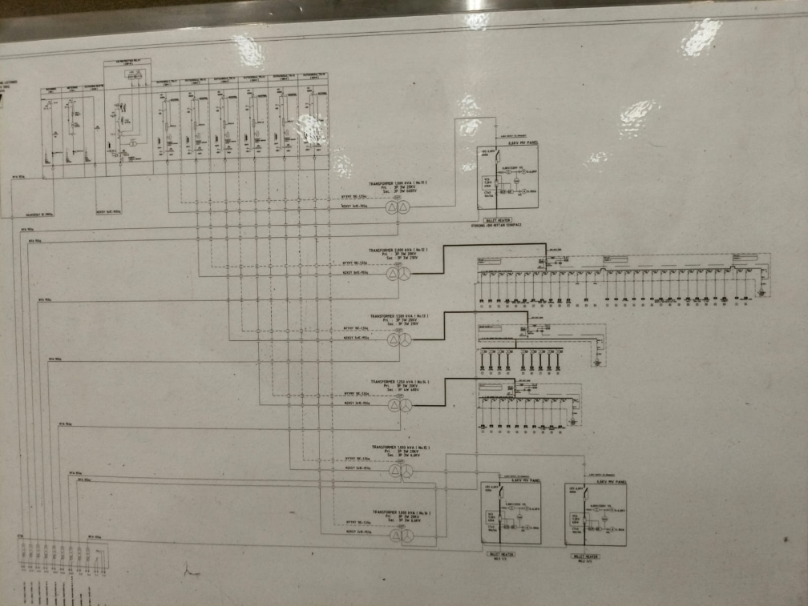

Trafo #12 LMVDP
Area Forging 2.000 kVA (Schneider PM5500)
Tingkat Beban Trafo
Distribusi beban trafo Factory 1
Profil Beban 24 Jam
WBP Peak Hour (18:00 - 22:00)
Aktivitas Beban Area Utama
Konsumsi energi mesin produksi terkini
Single Line Diagram (SLD) & Electrical Room Factory 1 PT Musashi
Penyulang Utama PLN 20 kV ➔ Kubikel Schneider SM6 ➔ 6 Unit Transformator Factory 1 (Kapasitas Total: 7.750 kVA)
Electrical Room & Gardu Distribusi 20 kV (Schneider SM6)
Blueprint aktual Single Line Diagram & Integrasi Panel LMVDP Trafo 12 (IP: 10.41.47.122)

Spesifikasi Gardu 20 kV Kubikel SM6
Meter Lapangan: Trafo 12 LMVDP (Forging Lines)
Power meter Schneider Electric PowerLogic PM5500 di panel LMVDP Trafo 12 terhubung ke Switch Cisco dengan IP 10.41.47.122. Mensuplai beban mesin Forging Press 2500T dengan arus hingga 4.028 A pada tegangan 210 V JIS.
Direktori 137 Power Meter Digital & IP Network
Peta penggantian kWh analog ke digital Mitsubishi & Schneider terintegrasi switch Cisco LAN
| ID Meter ⇕ | Nama Feeder / Panel Beban ⇕ | Area Pabrik ⇕ | IP Address (Cisco LAN) ⇕ | Daya (kW) ⇕ | Tegangan (V) ⇕ | Arus (A) ⇕ | Cos φ ⇕ | Status ⇕ | Aksi |
|---|